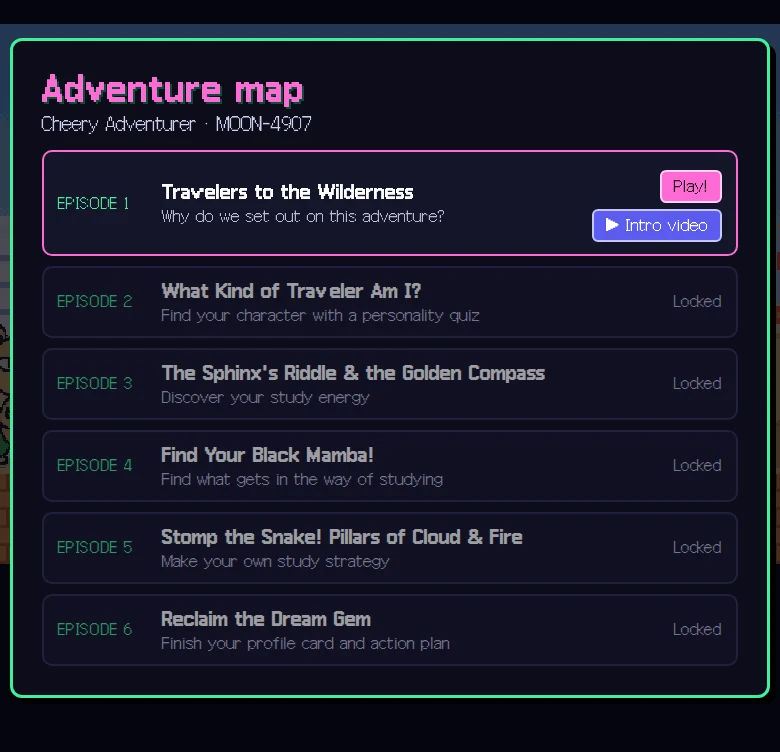

Yunho Kim
- Research Interests
- Academic Motivation, Intervention Development, MTSS, Family–School–Community Collaboration, Coaching
- Education
M.S., Industrial Psychology (Coaching Psychology), Kwangwoon University, 2024
B.S., Industrial & Organizational Psychology, Kwangwoon University, 2020 Interdisciplinary major in Leadership Coaching
- Technical Skills
Quantitative: SPSS · reliability and exploratory factor analysis · t tests · one-way, factorial, mixed, and repeated-measures ANOVA
Qualitative: semi-structured and focus group interviews (FGI) · needs assessment
Assessment: K-WISC-V, MMPI-2/A, TCI, HTP, KFD, SCT (under supervision) · behavioral observation · integrated reports
Programs: design and outcome evaluation of youth counseling and coaching programs · group facilitation · caregiver coaching
I’m on the Next Level in Education
A web game version of my four-session academic-motivation program at Hwanggok Elementary School (2025). Students find their learning character and study energy, name the “Black Mambas” that get in their way, and beat them with strategy cards, ending with a GROW action plan they can keep.
Next step: a classroom pilot at a small rural elementary school in Paju this fall (2026), followed by a formal evaluation after ethics review.
- 6 episodes
- ~30 minutes
- Korean & English
- Tablet, Chromebook, or phone
- No login

Adventure map Six episodes unlock in order. Episode 5 · Battle Answer each Black Mamba with a strategy card.
Episode 5 · Battle Answer each Black Mamba with a strategy card. My study strategies Each obstacle paired with what beat it.
My study strategies Each obstacle paired with what beat it.